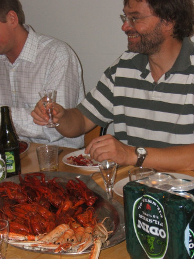
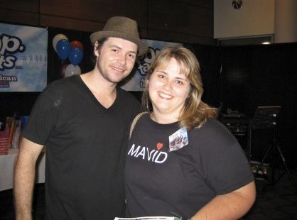

This page is to aid the search for the mysterious Butthews
Mavid Butthews is an enigma of a man, whom it would be of great interest to find. With the intent of spreading the word, I will post updates as to is where abouts here (however unlikely the connection - ONE CANNOT BE TOO EBULLIENT ABOUT FINDING THIS PERSON).
31st August - Mavid was conspicuous by his absence at a local crayfish party. According to Google, this is what he may have looked like had he been there:
23rd July - There has been claims that Mr Butthews has been seen here, for the penultimate two services. In fact, on the same website, we can see a clear allusion to Mr. Butthews in the very first sentence. Possibly a coincidence, but I doubt it.
Mavid Blogthews (2008) - could this girl and her blog hold any clues to finding the mysterious Mavid:

Possible Mavid sightings
Below we will post any potential sightings of Mavid, new or old. Please help us.
As a young child?

Possibly Mavid trying to trick us by passing off as someone else with a (remarkably) similar name: